Nel ventesimo secolo, sempre più sono gli studenti e le studentesse che intendono affacciarsi allo studio della parità di genere e, su questo, basare spesso le proprie tesi e le proprie ricerche.
In una società in cui tematiche come stereotipi di genere, salario egualitario, accesso paritario alle risorse e al mercato del lavoro sono argomenti sempre più frequenti e sulla bocca di tutti, moltissimi sono i giovani che desiderano affacciarsi alla storia di genere, alle lotte per l’emancipazione femminile e diritti delle donne.
Anche l’arte, non deve essere da meno: timoniere delle discipline culturali, da sempre accompagna l’uomo nel corso della storia, si lega agli avvenimenti politici, storici e così anche alle altre discipline. L’arte e in particolar modo il mondo dell’impressionismo, sono un ottimo spunto, spesso sottovalutato, per lo studio della storia di genere.
L’impressionismo è il primo periodo in cui la figura della donna pittrice assume un’effettiva importanza, a differenza dei periodi precedenti in cui finiva per essere una figura anomala e discussa.
Attraverso il sito, l’utente potrà informarsi e prendere spunto dalle storie uniche che hanno caratterizzato la vita e la carriera di queste tre donne pittrici: Berthe Morisot, Eva Gonzalès e Mary Cassatt. Attraverso i loro quadri, esplorabili all’interno del sito, potrà scoprire quali sono i soggetti più frequentemente ritratti e gli stili e le tecniche designate, e così, tutte le informazioni relative a ciascuno di esso.
Il sito fornisce descrizioni dettagliate e complete riguardo a tutto il catalogo di opere a nome delle artiste, e quindi estremamente funzionale e completo dato il target designato.
Gli strumenti vogliono essere semplici e chiari. Si utilizzano card pulite e chiare per rendere più facile la navigazione del sito, diviso in macro-sezioni quali: Catalogo, Protagoniste e Stile.
L’accesso al sito è libero, date le premesse, senza richiesta di registrazione e con la possibilità, tramite l’accesso all’area utente, di salvare determinati quadri nella propria galleria.
1. Brief
Finalità e obiettivi del progetto
Il sito “Impressionismo in Rosa” ha l’intento di raccogliere informazioni riguardanti le tre pittrici impressioniste che durante questo periodo hanno avuto una maggiore rilevanza.
Per raggiungere questo intento, il sito si sviluppa per “categorie” (stile, vita, opere), oltre che comprendere un catalogo contenente tutti i quadri delle tre artiste.
L’obiettivo risulta quindi il voler essere un punto di riferimento per lo studio della parità di genere, dell’emancipazione femminile, la storia della donna e la sua evoluzione negli anni, attraverso l’arte e le sue sfaccettature.
Pubblico di Riferimento
Il pubblico di riferimento è principalmente compreso da studenti, nell’età dai 15 anni fino ai 30, ma vuole poter essere un punto di riferimento per chiunque, anche al di fuori dell’ambito scolastico o universitario, abbia l’intenzione di affacciarsi alla tematica, sempre più importante, della parità di genere.
Per questo motivo, la struttura e la grafica del sito vogliono essere il più semplici e pulite possibile.
Accesso alla risorsa
Impressionismo In Rosa utilizza immagini e testi come principali mezzi di comunicazione. Essi permettono al visualizzatore l'accessibilità alla risorsa semplice e chiara.
Il sito struttura la propria interfaccia principalmente per l’utilizzo da PC, sfrutta l’ipotetica grandezza di uno schermo per rendere maggiormente pulita e semplice la navigazione.
I contenuti
Nel prototipo: I contenuti comprendono principalmente immagini e testi. Il sito si divide principalmente nella sezione catalogo e nella sezione “protagoniste”, dove è possibile trovare, nella prima una raccolta di tutti i quadri realizzati dalle tre donne pittrici e nella seconda un approfondimento riguardante la vita e lo stile di ciascuna di loro.
Gli approfondimenti sono scritti in modo chiaro, con uno stile chiaro, adatto per lo studio e quindi per il target di riferimento.
La sezione commenti e la sezione registrazione vuole rendere più facile e, allo stesso tempo, piacevole, l’esperienza dell’utente sul sito.
Le foto sono tutte di pubblico dominio e reperibili online. Io ho utilizzato google immagini e libri di storia di genere e storia e arte contemporanea.
Sviluppi futuri: Nel proseguire il progetto, bisognerebbe migliorare o approfondire il legame e l’impatto che queste tre pittrici hanno avuto riguardo alla figura della donna artista e di come, dall’impressionismo in poi, sempre più saranno le donne che esprimeranno le proprie emozioni tramite l’arte.
Successivamente, si potrebbe dedicare una sezione agli studi effettuati in merito all’emancipazione della donna tramite l’arte.
2. Benchmark
Idea
Analizzando i siti internet che fanno riferimento allo stesso tema del progetto da me realizzato, ho notato che tanti sono i siti che descrivono i profili delle artiste impressioniste, ma la maggior parte di essi fornisce un elenco solo parziale delle loro opere e una descrizione approssimativa sia delle loro vite, sia dei loro particolari stili pittorici.
Nessun sito fornisce un catalogo completo con la descrizione completa di tutte le opere.
Nessun sito inoltre dedica una propria sezione all’effetto che queste tre donne hanno inciso sulla storia dell’emancipazione femminile e, più dettagliatamente, sul mondo che hanno aperto per le donne nell’arte.
Pochissimi siti inoltre forniscono la possibilità di salvare in galleria determinati quadri, in modo da facilitare lo studio o la ricerca da parte dell’utente.
Il mio sito fornisce, non solo un elenco completo e dettagliato delle opere di queste artiste, ma dedica una propria sezione anche all’impatto che la loro opera ha avuto sull’arte e sul mondo femminile.
Ho consultato questo articolo del National Geographic, da cui ho reperito diverse informazioni utili alla mia risorsa, individuato alcuni dei quadri più famosi delle tre pittrici. Questo però è solo un articolo all’interno di un sito molto più espanso, il National Geographic, che tratta di diverse tematiche anche non inerenti all’arte e al femminismo. Infatti esso è un sito multi-tematico e non approfondisce il profilo delle donne impressioniste, né tantomeno fornisce un catalogo completo delle loro opere.
Anche questo sito si struttura per articoli, ma pone come macro-tema quello dell’arte. L’articolo si struttura con una breve descrizione superficiale della vita delle tre artiste, proseguendo con la descrizione di alcune delle loro opere fondamentali.
Anche in questo caso non viene dedicata abbastanza attenzione al rapporto delle donne con i loro colleghi impressionisti, né alla loro vita privata, né è presente un catalogo completo e dettagliato delle loro opere.
Offre però un ottimo spunto riflessivo che ho usufruito per strutturare alcune descrizioni all’interno del mio progetto.
Anche questo sito, quindi, tratta l’argomento in maniera troppo semplice e poco dettagliata, è quindi utile se si è interessati all’argomento, ma non sufficiente per poter basare un’eventuale ricerca o studio su di esso.
Anche questo sito si struttura per articoli, e come il precedente trova nell’arte il proprio focus principale. Valgono le stesse caratteristiche del precedente: catalogo non completo ma ottimo spunto di riflessione su alcune tematiche che concernono le figure di queste tre donne pittrici.
Da esso ho preso spunto soprattutto riguardo al linguaggio, per rendere più accattivante la lettura dei miei contenuti.
Europeana: È un sito che raccoglie il patrimonio culturale digitale europeo. Contiene video, immagini, testi, modelli 3D. Da esso ho preso principalmente spunto per rendere chiara e pulita la struttura e la grafica del mio sito. In particolar modo riprendo il colore bianco predominante all’interno del sito, la section hero che attribuisce all’interfaccia dell’Index un aspetto più ordinato e interessante.
Inoltre ho preso spunto anche sulla sezione che invita a creare un account per, nel mio caso, poter salvare i quadri nella propria galleria e permettere all’utente una migliore esperienza.
Un sito principalmente dedicato alla moda femminile, che ha dedicato un articolo alle tre donne, pittrici impressioniste, in vista del 150esimo anniversario della prima mostra impressionista a Parigi. L’articolo mette in luce il contributo delle pittrici Berthe Morisot, Mary Cassatt ed Eva Gonzalès, spesso trascurate rispetto ai loro colleghi maschi. Sottolinea come queste artiste abbiano sfidato le convenzioni sociali dell’epoca per affermarsi nel movimento impressionista, contribuendo in modo significativo alla sua evoluzione e successo. Il pezzo evidenzia anche il tardivo riconoscimento del loro lavoro nel mondo dell’arte e delle aste moderne.
Da questo ho preso moltissimo spunto per quanto riguarda la sezione del mio sito dedicata al contributo lasciato dall’opera di queste pittrici, in termini di storia di genere. Ma anche questo sito non contiene un catalogo delle opere completo né si sofferma sui passaggi fondamentali della vita di queste artiste.
3. Struttura
Mappa dei concetti
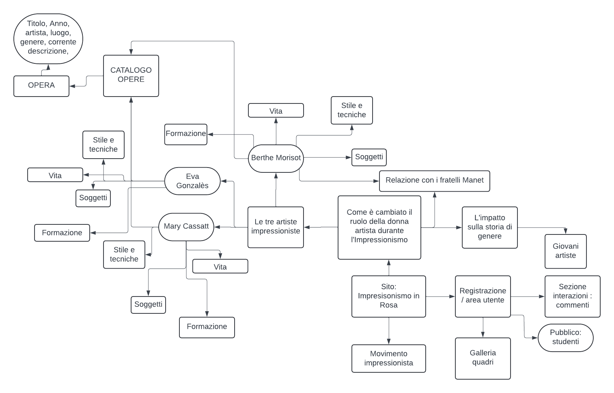
Schema delle dipendenze
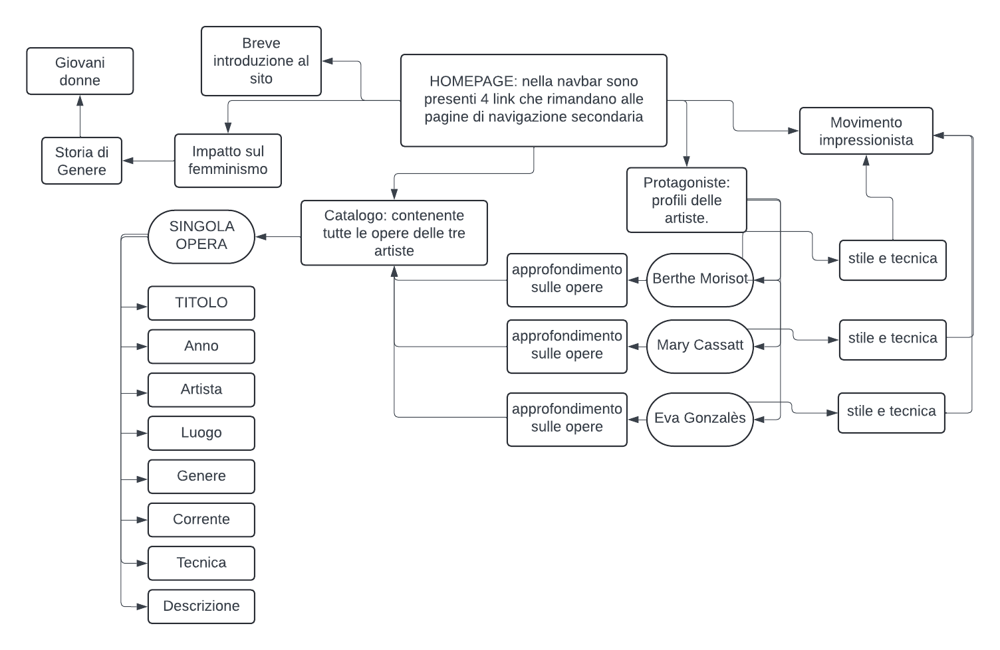
4.Layout
L'homepage
Architettura d'interfaccia
Nella testata, all’interno della barra di navigazione, sono presenti: logo del sito, il titolo del sito e le tre sezioni del sito: catalogo, protagoniste (menù dropdown) e l’impatto sul femminismo. Tutto a destra è presente una barra di ricerca che permette una ricerca rapida all’utente.
Successivamente troviamo il body, nel quale è presente:
hero section: titolo, sottotitolo e breve descrizione, con immagine di sfondo.
una sezione introduttiva
una sezione “protagoniste” dove conoscere le tre artiste su cui si concentra il mio sito.
una sezione servizi, che rimanda ai link di navigazione presenti nella barra di navigazione.
uno slideshow contenente varie immagini, che mostra il titolo del quadro al passaggio del mouse e con cui l’utente può interagire tramite le freccette laterali.
una sezione commenti e che invita l’utente a registrarsi per salvare i quadri nella propria galleria.
l footer contenente le indicazioni sul copyright, le informazioni relative all’anno di creazione del contenuto ed eventuali aggiornamenti, il link per il web project plan, il link per l’accesso diretto ai social.
I wireframe
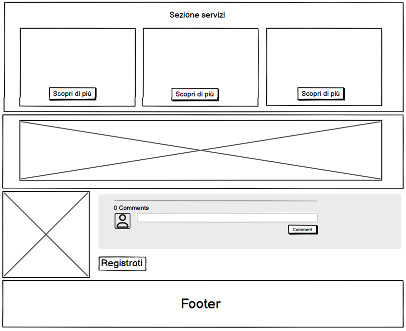
Catalogo
Architettura d'interfaccia
Oltre alla testata, che resta sempre la stessa, il corpo si compone:
Le briciole di pane, che indicano all’utente il percorso di navigazione.
Una barra laterale che permette la navigazione filtrata per anno e per artista.
La parte principale si compone poi di una griglia di 9 elementi (3 per riga e 3 per colonna), contenente i quadri, ognuno con la sua breve descrizione comprendente di Titolo, anno e artista.
I wireframe
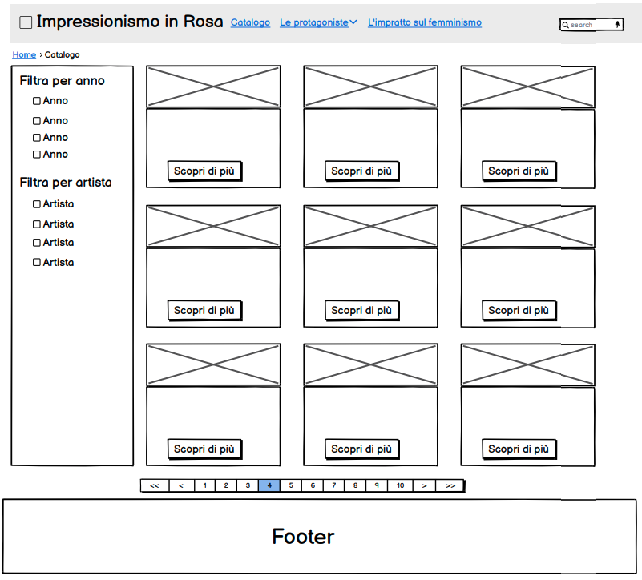
Pagina "Protagoniste"
Architettura d'interfaccia
Pagina che funge da collegamento per le tre pagine dedicate ai profili delle tre artiste.
Il body si compone sempre delle briciole di pane e della sezione che contiene le tre card per i tre profili.
I wireframe
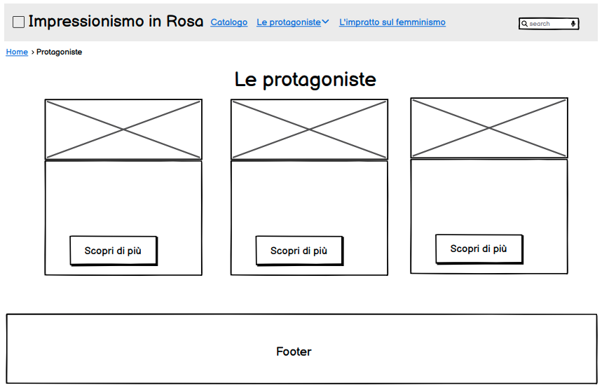
Pagina profilo protagonista - Berthe Morisot (esempio)
Architettura d'interfaccia
La pagina della protagonista si compone di alcune sezioni di testo, intervallate da immagini relative ad esse.
Tra queste, è inserita una linea del tempo che descrive le fasi della formazione di ciascuna artista.
Al di sotto si trova una sezione “può interessarti anche” che contiene i link diretti per alcune pagine relative all’argomento visualizzato sulla pagina corrente.
I wireframe
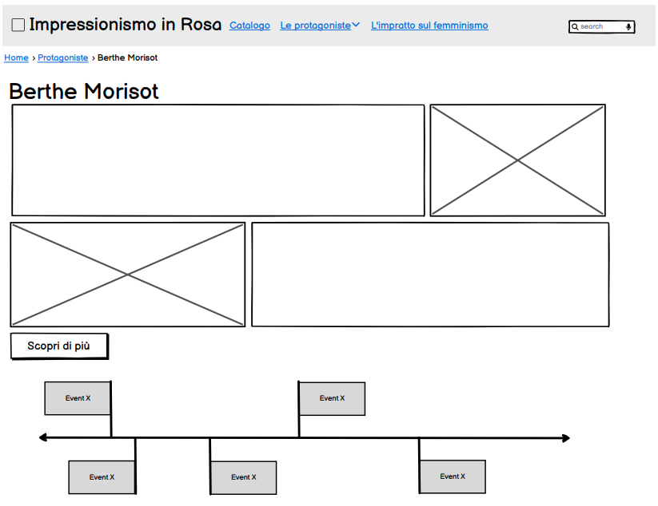
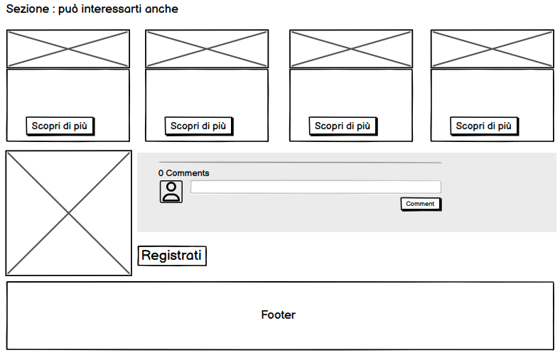
Pagina Item - Opera
Architettura d'interfaccia
Si compone di un riquadro che contiene l’immagine sulla sinistra, a destra tutte le informazioni riguardo all’opera. Titolo, artista, anno, genere, tipo di tecnica, corrente, luogo e descrizione.
Si aggiunge un bottone “salva in galleria” che apre un pop up che invita alla sezione utente nel caso di mancato accesso.
I wireframe
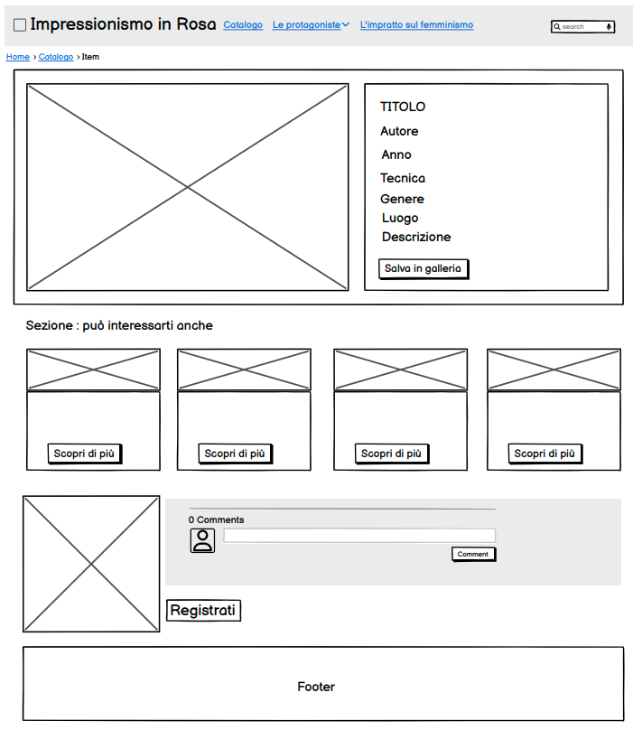
Pagina: Impressionismo
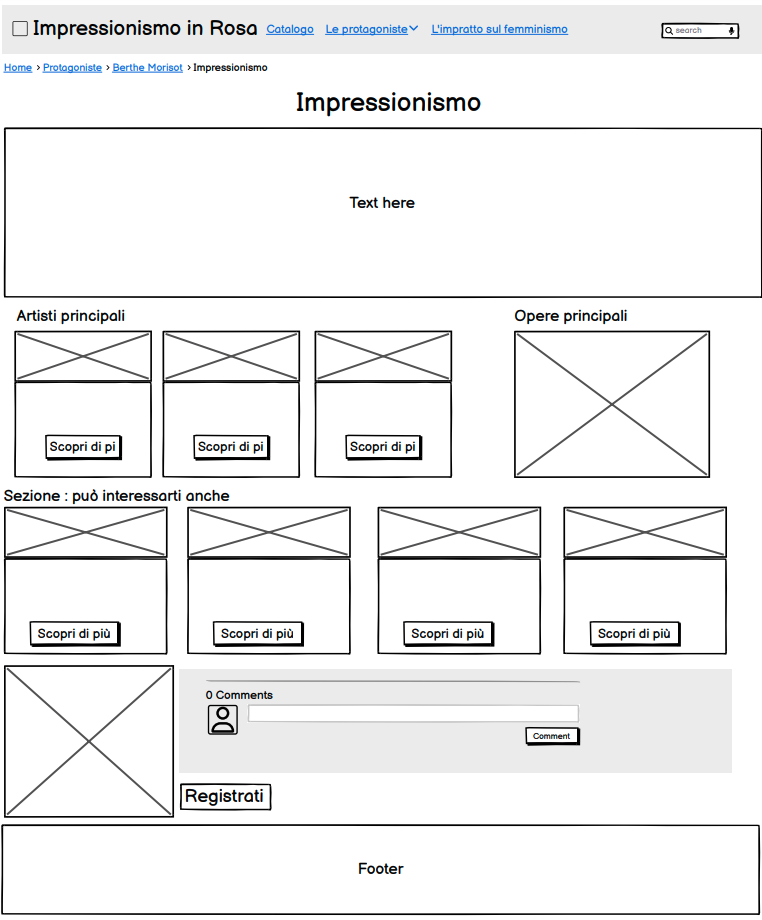
5. Usabilità
5.1 Architettura d'interfaccia
Il sito presenta la tipica struttura di un sito html.
La navbar presenta il titolo del sito e un'icona che richiami il tema e il colore del sito, e presenta di seguito le categorie principali in cui si divide il sito e che espandendosi rivelano la navigazione secondaria.
Il titolo del sito e il logo, fissi in alto a sinistra, riportano, se cliccati, all’homepage.
All’estremo della navbar è presente una barra di ricerca per facilitare la navigazione all’interno del sito.
l’Homepage si struttura, prima con una hero section che introduce il tema del sito e permette all’utente di farsi un’idea sul contenuto del sito stesso, per poi presentare una piccola introduzione accattivante sull’argomento e che induce l’utente a continuare la lettura.
A seguire una sezione dedicata alle tre protagoniste del sito, che introduca i loro profili e permetta una navigazione mirata per coloro che sono interessati a un determinato argomento, piuttosto che un altro. Compresi in questa sezione sono i bottoni “Continua a leggere” che riportano direttamente al profilo dell’artista selezionato. Come questi, anche altri bottoni “scopri di più” sono presenti nel resto delle sezioni del sito, sono tutti in un colore più scuro in modo da risaltare subito all’occhio dell’utente.
Al di sotto di questa è presente un settore che riprende le macro-sezioni del sito: i profili delle protagoniste, l’intero catalogo delle opere, e la parte del sito dedicata principalmente all’impatto avuto sulla storia di genere e sul ruolo della donna nell’arte.
Successivamente si trova il carousel di immagini con i principali quadri delle artiste esplorabile attraverso gli indicatori laterali.
È presente poi una sezione commenti che permette all’utente di dare il proprio feedback e contribuire alla costruzione di una community incentrata sul tema del sito.
A seguire troviamo l’apposita sezione che invita l’utente a registrarsi per usufruire al massimo il sito e salvare i quadri in galleria.
È presente poi il footer che si mantiene sempre uguale in tutte le pagine del sito e contiene i link per i social del sito.
Nel catalogo sono presenti diverse card che ospitano l’immagine del quadro e brevi informazioni suddivise per categorie. La griglia usata comprende 9 card. Sono presenti varie pagine in quanto il catalogo è completo di tutte le opere delle tre artiste.
Le card sono ordinabili per ordine alfabetico A-Z o Z-A, ed è presente una navigazione secondaria laterale che li possa filtrare per anno o per artista.
Nella pagina Item il quadro è contenuto in un riquadro ed a destra è presente la descrizione completa.
Al di sotto sono presenti ulteriori card che inducono l’utente a continuare la propria lettura e navigazione tramite il “Può interessarti anche” che contiene altre pagine simili a quella attualmente visualizzata, lo stile dell’artista, la vita dell’artista, la sua corrente e le altre opere del catalogo.
Altre caratteristiche sull’architettura generale di interfaccia:
nelle sezioni dove necessario (ad esempio il catalogo) è stata inserita una navigazione secondaria (in questo caso per artista e per anno) utile per navigare più facilmente all’interno del sito.
gli strumenti di navigazione primaria hanno la stessa posizione al cambiare della pagina.
Per rendere visivamente più comprensibile e subito intuibile la struttura del sito, le varie sezioni sono comprese all’interno di divisori con, alcune volte, colori diversi per il background.
Nella sezione del catalogo, in particolare, è presente la paginazione, che permette una navigazione fluida.
Sono presenti anche le briciole di pane come strumento di orientamento per rendere maggiormente chiaro il percorso di navigazione e la gerarchia dei contenuti.
Riguardo all’utilizzo dei bottoni “scopri di più”, essi sono presenti in varie sezioni dell’interfaccia e permettono una navigazione più veloce e mirata per l’utente in cerca di determinate informazioni piuttosto che altre e che quindi portano a determinate sezioni del sito.
Layout e scrittura
Il layout del sito comprende box, card e icone con colori simili (tendenti alla palette del rosa) e dalle dimensioni simili.
I testi presenti sono intervallati da figure per rendere la lettura e l’interfaccia meno pesante e più gradevole.
Tra una sezione e l’altra dei testi è sempre presente un piccolo spazio che divida le due sezioni.
Il font che ho scelto è in stile “elegante” perchè ho pensato che fosse adatto al tema del mio progetto e potesse renderlo più gradevole alla vista. Si mantiene uguale per tutto il sito.
Le icone sono state inserite dove necessario per permettere all’utente di identificare meglio la categoria della sezione in questione.
È presente, in alcuni testi, il grassetto per identificare le parole chiave.
L’utilizzo dei bottoni “scopri di più” è per ovviare all’impossibilità di inserire tutto il testo in un’unica pagina ma dedicare a ciascuna sezione o item il proprio spazio.
6.Servizi
6.1 Strumenti di Browsing
Come strumenti aggiuntivi di browsing ho usato una linea del tempo, presente in tutte le schede delle tre protagoniste, che delineano le varie fasi della loro vita. In questo modo è più facile per l’utente comprendere la formazione della pittrice in questione.
6.2 Strumenti di interazione - utilities e tools
Sono presenti diversi tools: nella navbar è presente un dropdown che presenta i profili delle tre artiste e tramite cui è possibile accedere direttamente alle loro pagine personalizzate.
Nella homepage è poi presente un carousel, che offre all’utente una panoramica generale dei quadri più famosi delle artiste, ritrovabili poi nella sezione catalogo al completo.
Sono presenti diversi bottoni che vanno a dividere più equamente gli spazi, senza inserire tutte le informazioni in un’unica pagina ma rendendo la navigazione più fluida e mirata.
La paginazione è un’altro elemento che permette, all’interno della sezione “catalogo” di visualizzare tutti i quadri presenti all’interno di esso.
Un altro tool è sicuramente la hero section e in particolare la hero image, così anche la barra di ricerca nella navbar, le cards nell’interfaccia principale e la sezione commenti.
7.Bibliografia
Per il web project plan
Francesca Tomasi, Metodologie informatiche e discipline umanistiche, 2008
Francesca Tomasi, slide del corso di Informatica Umanistica, a.a. 2022-2023
 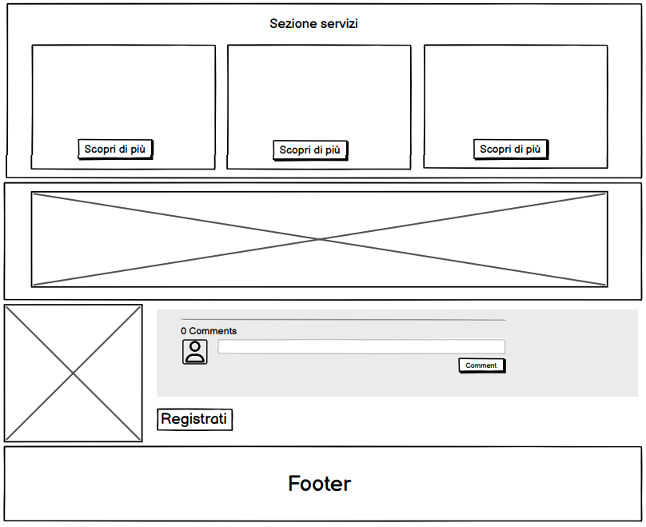
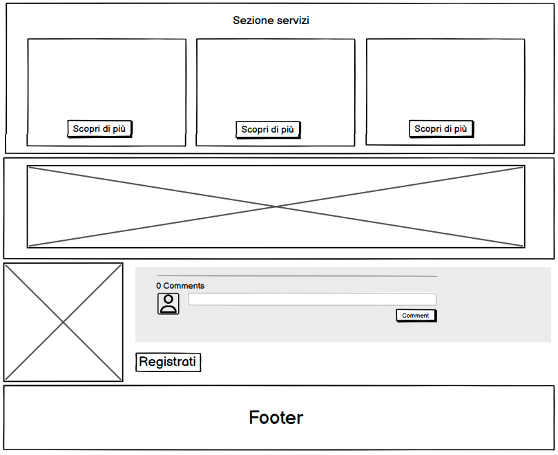